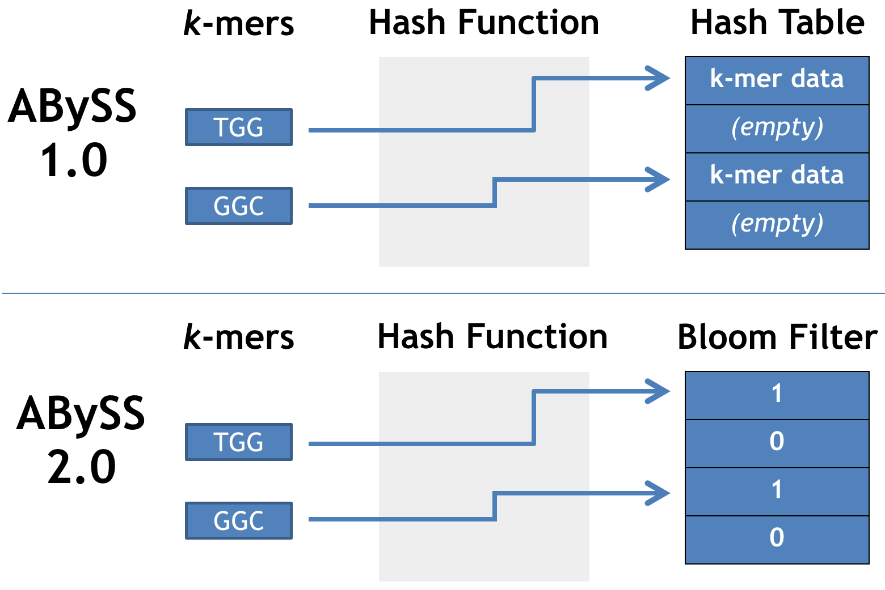
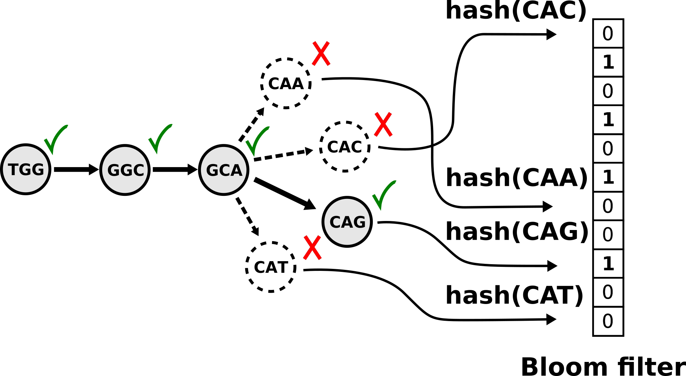
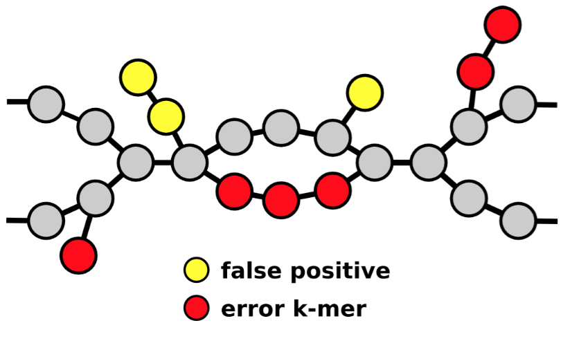
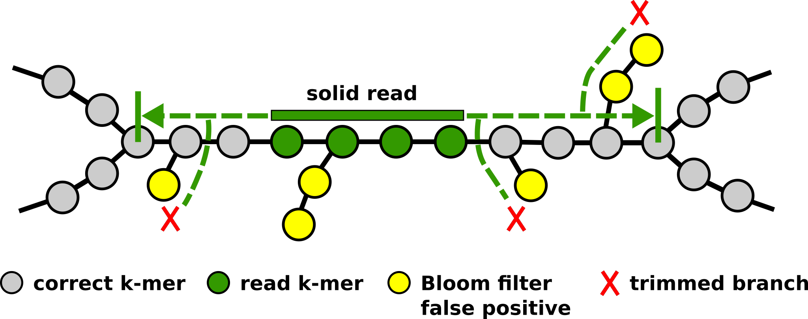
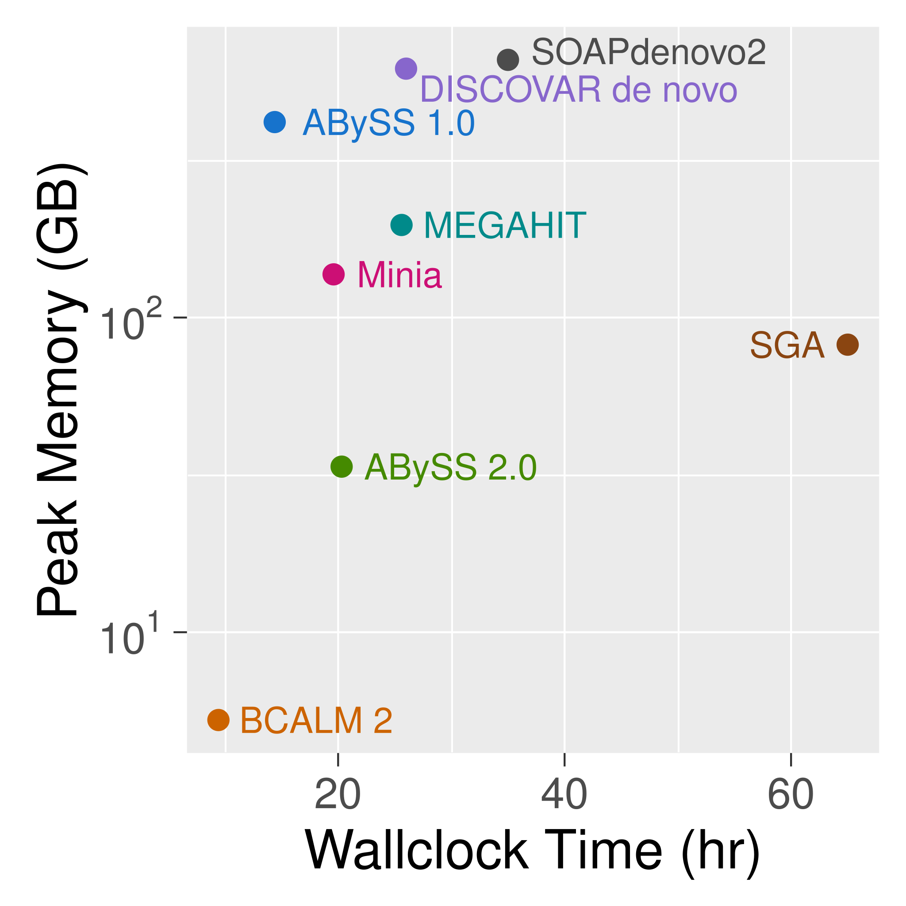
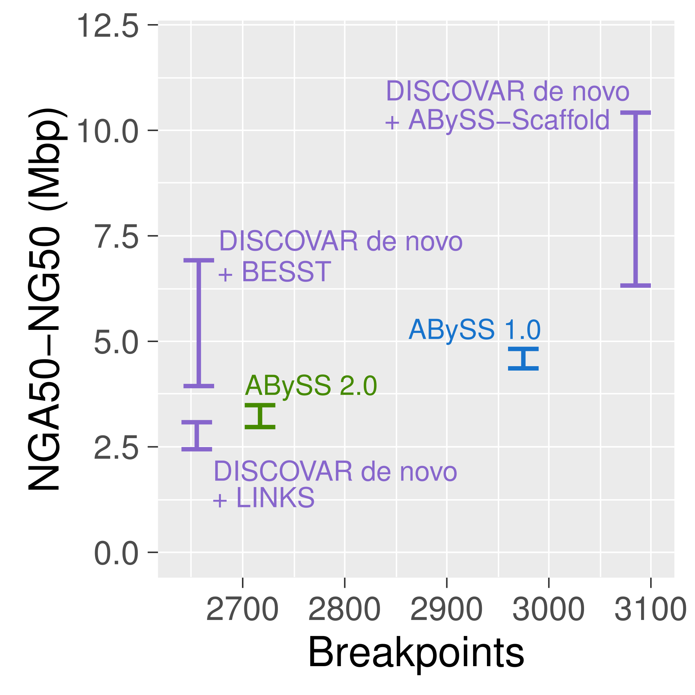
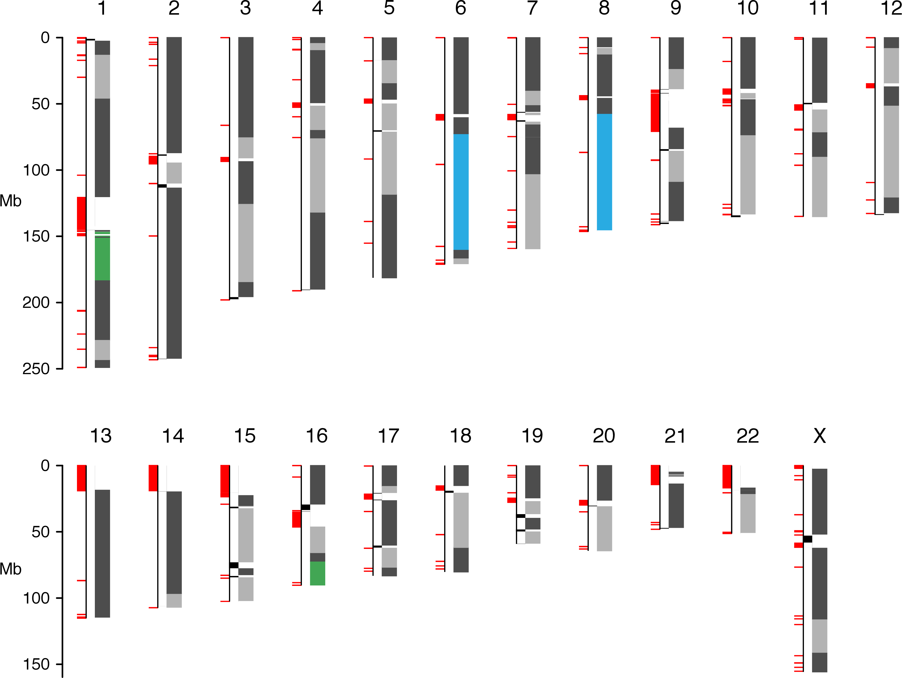

Memory efficient de Bruijn graph using a Bloom filter Memory usage is independent of k
Navigating a Bloom filter de Bruijn graph Introduced by Minia (Chikhi et al. 2012)
Sequencing errors and Bloom filter false positives
Solid reads are extended using the Bloom filter de Bruijn graph to assemble unitigs
ABySS 2.0 reduces memory usage by 10 fold vs ABySS 1.0 for human genome assembly (GIAB HG004 NA24143)
Contiguity and correctness are comparable
41.9 Mbp NG50 scaffolded with BioNano optical mapping
Conclusion
ABySS 2.0 reduces memory usage by 10 fold
from 418 GB for ABySS 1.0
to 34 GB for ABySS 2.0
for a human genome assembly
High-throughput short-read sequencing
combined with large molecule scaffolding
such as 10X Genomics, BioNano, Hi-C
permits cost effective assembly of large genomes
fin
Posters
SEQ-7 Tigmint: Correcting Assembly Errors Using Linked Reads From Large Molecules
SEQ-6 ARKS: chromosome-scale human genome scaffolding with linked read kmers
SEQ-10 ONTig: Contiguating Genome Assembly using Oxford Nanopore Long Reads
SEQ-8 Multi-Index Bloom Filters: A probabilistic data structure for sensitive multi-reference sequence classification with multiple spaced seeds